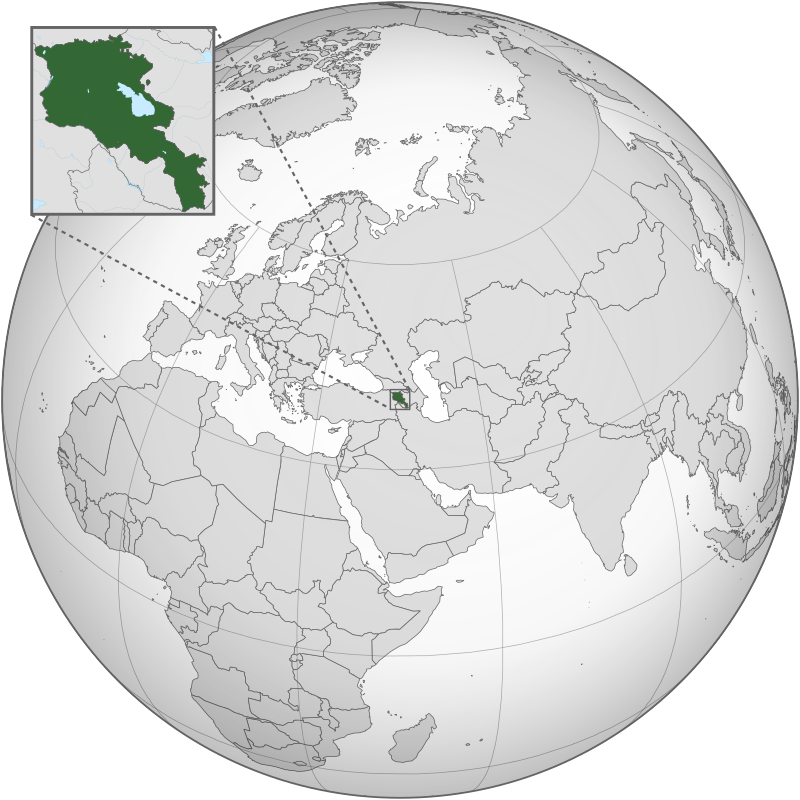

| Rank | City (Armenian name) | Province | Population (2001 census) |
Population (2011 census) |
Population (2020 estimate) |
Change (2011–2020) |
|---|---|---|---|---|---|---|
| 1 | Yerevan (Երեւան) | — | 1,103,488 | 1,060,138 | 1,084,000 | +2.25% |
| 2 | Gyumri (Գյումրի) | Shirak | 150,917 | 121,976 | 112,400 | −7.85% |
| 3 | Vanadzor (Վանաձոր) | Lori | 107,394 | 86,199 | 77,200 | −10.44% |
| 4 | Vagharshapat (Վաղարշապատ)[a] | Armavir | 56,388 | 46,540 | 46,200 | −0.73% |
| 5 | Abovyan (Աբովյան) | Kotayk | 44,569 | 43,495 | 44,900 | +3.23% |
| 6 | Kapan (Կապան) | Syunik | 45,711 | 43,190 | 42,300 | −2.06% |
| 7 | Hrazdan (Հրազդան) | Kotayk | 52,808 | 41,875 | 40,000 | −4.48% |
| 8 | Armavir (Արմավիր) | Armavir | 32,034 | 29,319 | 27,800 | −5.18% |
| 9 | Artashat (Արտաշատ) | Ararat | 25,066 | 22,269 | 19,300 | −13.33% |
| 10 | Ijevan (Իջևան) | Tavush | 20,223 | 21,081 | 20,300 | −3.70% |
| 11 | Gavar (Գավառ) | Gegharkunik | 26,621 | 20,765 | 18,100 | −12.83% |
| 12 | Goris (Գորիս) | Syunik | 23,261 | 20,591 | 20,400 | −0.93% |
| 13 | Charentsavan (Չարենցավան) | Kotayk | 25,039 | 20,363 | 20,400 | +0.18% |
| 14 | Ararat (Արարատ) | Ararat | 20,480 | 20,235 | 20,400 | +0.82% |
| 15 | Masis (Մասիս) | Ararat | 21,376 | 20,215 | 20,600 | +1.90% |
| 16 | Artik (Արթիկ) | Shirak | 17,561 | 19,534 | 17,800 | −8.88% |
| 17 | Sevan (Սևան) | Gegharkunik | 21,422 | 19,229 | 19,000 | −1.19% |
| 18 | Ashtarak (Աշտարակ) | Aragatsotn | 20,636 | 18,834 | 16,800 | −10.80% |
| 19 | Dilijan (Դիլիջան) | Tavush | 16,202 | 17,712 | 17,300 | −2.33% |
| 20 | Sisian (Սիսիան) | Syunik | 16,843 | 14,894 | 14,800 | −0.63% |
| 21 | Alaverdi (Ալավերդի) | Lori | 16,641 | 13,343 | 12,500 | −6.32% |
| 22 | Stepanavan (Ստեփանավան) | Lori | 16,299 | 13,086 | 12,400 | −5.24% |
| 23 | Martuni (Մարտունի) | Gegharkunik | 11,756 | 12,894 | 11,500 | −10.81% |
| 24 | Spitak (Սպիտակ) | Lori | 14,984 | 12,881 | 12,700 | −1.41% |
| 25 | Vardenis (Վարդենիս) | Gegharkunik | 12,753 | 12,685 | 12,400 | −2.25% |
| 26 | Yeghvard (Եղվարդ) | Kotayk | 11,627 | 11,672 | 11,900 | +1.95% |
| 27 | Vedi (Վեդի) | Ararat | 12,963 | 11,384 | 11,800 | +3.65% |
| 28 | Byureghavan (Բյուրեղավան) | Kotayk | 8,152 | 9,513 | 9,100 | −4.34% |
| 29 | Nor Hachn (Նոր Հաճն) | Kotayk | 10,168 | 9,307 | 9,300 | −0.08% |
| 30 | Metsamor (Մեծամոր) | Armavir | 9,870 | 9,191 | 8,400 | −8.61% |
| 31 | Berd (Բերդ) | Tavush | 8,810 | 7,957 | 7,500 | −5.74% |
| 32 | Yeghegnadzor (Եղեգնաձոր) | Vayots Dzor | 8,187 | 7,944 | 7,400 | −6.85% |
| 33 | Tashir (Տաշիր) | Lori | 9,538 | 7,773 | 7,200 | −7.37% |
| 34 | Kajaran (Քաջարան) | Syunik | 8,439 | 7,163 | 6,900 | −3.67% |
| 35 | Aparan (Ապարան) | Aragatsotn | 6,614 | 6,451 | 5,900 | −8.54% |
| 36 | Vayk (Վայք) | Vayots Dzor | 6,024 | 5,877 | 5,600 | −4.71% |
| 37 | Chambarak (Ճամբարակ) | Gegharkunik | 6,405 | 5,850 | 5,600 | −4.27% |
| 38 | Maralik (Մարալիկ) | Shirak | 5,782 | 5,398 | 5,400 | +0.04% |
| 39 | Noyemberyan (Նոյեմբերյան) | Tavush | 5,486 | 5,310 | 4,500 | −15.25% |
| 40 | Talin (Թալին) | Aragatsotn | 5,614 | 5,310 | 4,100 | −22.79% |
| 41 | Jermuk (Ջերմուկ) | Vayots Dzor | 5,394 | 4,628 | 4,100 | −11.41% |
| 42 | Meghri (Մեղրի) | Syunik | 4,805 | 4,580 | 4,500 | −1.75% |
| 43 | Ayrum (Այրում) | Tavush | 2,351 | 2,126 | 1,800 | −15.33% |
| 44 | Akhtala (Ախթալա) | Lori | 2,435 | 2,092 | 2,000 | −4.40% |
| 45 | Tumanyan (Թումանյան) | Lori | 1,909 | 1,710 | 1,500 | −12.28% |
| 46 | Tsaghkadzor (Ծաղկաձոր) | Kotayk | 1,618 | 1,256 | 1,200 | −4.46% |
| River | Length | Basin size | Tributary of |
|---|---|---|---|
| Aras River (Araks)[2][3][4] | 1,072 km (666 mi) (158 km (98 mi) in Armenia) | 102,000 km2 (39,000 sq mi) | Aras→ Kura→ Caspian Sea |
| Akhuryan River[2] | 186 km (116 mi) | 9,670 km2 (3,730 sq mi) | Aras→ Kura→ Caspian Sea |
| Vorotan River[2] | 179 km (111 mi) | 5,650 km2 (2,180 sq mi) | Hakari→ Aras→ Kura→ Caspian Sea |
| Hrazdan River[2][4] | 146 km (91 mi) | 2,560 km2 (990 sq mi) | Aras→ Kura→ Caspian Sea |
| Arpa River[2][3] | 126 km (78 mi) | 2,630 km2 (1,020 sq mi) | Aras→ Kura→ Caspian Sea |
| Aghstev River[2] | 99 km (62 mi) | 2,500 km2 (970 sq mi) | Kura→ Caspian Sea |
| Debed River[2][3][4] | 92 km (57 mi) | 4,080 km2 (1,580 sq mi) | Khrami→ Kura→ Caspian Sea |
| Kasagh River[6][4] | 89 km (55 mi) | 1,389 km2 (536 sq mi) | Metsamor→ Aras→ Kura→ Caspian Sea |
| Voghji River[6] | 88 km (55 mi) | Aras→ Kura→ Caspian Sea | |
| Pambak River[6] | 86 km (53 mi) | 1,370 km2 (530 sq mi) | Debed→ Khrami→ Kura→ Caspian Sea |
| Dzoraget River[2] | 71 km (44 mi) | Debed→ Khrami→ Kura→ Caspian Sea | |
| Getik River[6][8][7] | 58 km (36 mi) | 586 km2 (226 sq mi) | Aghstafa→ Kura→ Caspian Sea |
| Vedi River[6] | 58 km (36 mi) | Aras→ Kura→ Caspian Sea | |
| Azat River[6] | 56 km (35 mi) | Aras→ Kura→ Caspian Sea | |
| Argitchi River[9][6][4] | 51 km (32 mi) | Lake Sevan | |
| Getar River[6] | 25 km (16 mi) | Hrazdan→ Aras→ Kura→ Caspian Sea | |
| Tandzut River[6] | 23 km (14 mi) | Pambak→ Debed→ Khrami→ Kura→ Caspian Sea | |
| Vanadzor River[6] | 14 km (8.7 mi) | Tandzut→ Pambak→ Debed→ Khrami→ Kura→ Caspian Sea | |
| Vachagan River[6] | 5 km (3.1 mi) | Voghji→ Aras→ Kura→ Caspian Sea |
- 1 Armenian Genocide Memorial
- 2 Republic Square
- 3 Armenian Opera Theater
- 4 Cascade
- 5 Mother Armenia
- 6 Matenadaran
- 7 Erebuni Fortress
- 8 Saint Gregory Cathedral
- 9 Blue Mosque
- 10 Karen Demirchyan Sports and Concerts Complex
- 11 Television tower
- 12 Temple Garni
- 13 National Museum
- 14 Etchmiadzin Cathedral
- 15 Saint Sargis Church
- 16 Bridge of Win
- 17 Tatev's Monastry
- 18 Geghard's Monastry
- 19 See also
- 20 References


Armenia , officially the Republic of Armenia, is a landlocked country in the Armenian Highlands of Western Asia. It is a part of the Caucasus region; and is bordered by Turkey to the west, Georgia to the north, the Lachin corridor (under a Russian peacekeeping force)and Azerbaijan to the east, and Iran and the Azerbaijani exclave of Nakhchivan to the south. Yerevan is the capital, largest city and the financial center.
Armenia is a unitary, multi-party, democratic nation-state with an ancient cultural heritage. The first Armenian state of Urartu was established in 860 BC, and by the 6th century BC it was replaced by the Satrapy of Armenia. The Kingdom of Armenia reached its height under Tigranes the Great in the 1st century BC and in the year 301 became the first state in the world to adopt Christianity as its official religion. The ancient Armenian kingdom was split between the Byzantine and Sasanian Empires around the early 5th century. Under the Bagratuni dynasty, the Bagratid Kingdom of Armenia was restored in the 9th century. Declining due to the wars against the Byzantines, the kingdom fell in 1045 and Armenia was soon after invaded by the Seljuk Turks. An Armenian principality and later a kingdom Cilician Armenia was located on the coast of the Mediterranean Sea between the 11th and 14th centuries.
Between the 16th and 19th centuries, the traditional Armenian homeland composed of Eastern Armenia and Western Armenia came under the rule of the Ottoman and Persian empires, repeatedly ruled by either of the two over the centuries. By the 19th century, Eastern Armenia had been conquered by the Russian Empire, while most of the western parts of the traditional Armenian homeland remained under Ottoman rule. During World War I, 1.5 million Armenians living in their ancestral lands in the Ottoman Empire were systematically exterminated in the Armenian genocide. In 1918, following the Russian Revolution, all non-Russian countries declared their independence after the Russian Empire ceased to exist, leading to the establishment of the First Republic of Armenia. By 1920, the state was incorporated into the Transcaucasian Socialist Federative Soviet Republic, and in 1922 became a founding member of the Soviet Union. In 1936, the Transcaucasian state was dissolved, transforming its constituent states, including the Armenian Soviet Socialist Republic, into full Union republics. The modern Republic of Armenia became independent in 1991 during the dissolution of the Soviet Union.
Armenia is a developing country and ranks 85th on the Human Development Index (2021). Its economy is primarily based on industrial output and mineral extraction. While Armenia is geographically located in the South Caucasus, it is generally considered geopolitically European.[citation needed] Since Armenia aligns itself in many respects geopolitically with Europe, the country is a member of numerous European organizations including the Council of Europe, the Eastern Partnership, Eurocontrol, the Assembly of European Regions, and the European Bank for Reconstruction and Development. Armenia is also a member of certain regional groups throughout Eurasia, including the Asian Development Bank, the Collective Security Treaty Organization, the Eurasian Economic Union, and the Eurasian Development Bank. Armenia supports the de facto independent Artsakh, which was proclaimed in 1991. Armenia also recognises the Armenian Apostolic Church, the world's oldest national church, as the country's primary religious establishment.[4][22] The unique Armenian alphabet was created by Mesrop Mashtots in 405 AD.
The national flag of Armenia, the Armenian Tricolour, consists of three horizontal bands of equal width, red on the top, blue in the middle, and apricot on the bottom. The Armenian Supreme Soviet adopted the current flag on 24 August 1990.
The national coat of arms of Armenia (Armenian: Հայաստանի զինանշանը, Hayastani zinanshan) was adopted on April 19, 1992, by resolution of the Armenian Supreme Council.
